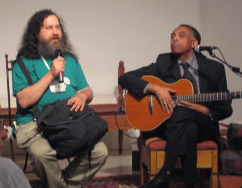

warning: require_once(sites/mutgamb.org/modules/print/lib/dompdf/dompdf_config.inc.php) [function.require-once]: failed to open stream: No such file or directory in /var/www/multisite_drupal6/sites/mutgamb.org/modules/print/print_pdf/print_pdf.pages.inc on line 194.
No momento em que as cidades chegam no limite de sua sustentabilidade, mais e mais pessoas se voltam para o campo como opção de vida que garante algum grau de autonomia. O relativo isolamento das comunidades rurais faz com que muitas soluções tenham que ser encontradas localmente - desde o conserto de máquinas e veículos até o tratamento médico. Por outro lado, a cultura do faça-você-mesmo (ou façamos-juntas), cada vez mais popular, também se orienta pela busca da independência tecnológica. Para essa convocatória, estamos propondo a intersecção das culturas hacker e rural para o desenvolvimento de projetos que permitam uma vida mais autônoma.
Werbert convida a todxs para o segundo Encontro Open Hardware em Brasília que contecerá no próximo dia 28, no auditório da Biblioteca Nacional. Os participantes também podem trazer suas criações para integrar a Mostra de Experimentos e Projetos que será realizada no encerramento do evento.
O objetivo é incentivar o uso de ferramentas livre, tanto de hardware quanto de software. Sendo que o foco principal do evento é o hardware e os projetos criados com essa associação. Seria ótima a participação de vocês online. Quem quiser, também pode acompanhar pelo Facebook.
Enviado por f3lipecabral em seg, 23/07/2012 - 11:29
Pois é, 21 anos de liberdade. Em 2012 o Linux completou 21 anos de existência. Foi uma jornada que começou em 1991 e que percorreu 21 ricos anos de inovação, desenvolvimento, criação de mercado e sempre manteve o código aberto. Mas afinal, para quem não conhece e para quem ainda tem pouca intimidade, o que é que o Linux? Por que e como milhares de pessoas tem usado aplicativos de código aberto? O Linux é uma boa escolha porque é melhor ou é melhor porque é uma boa escolha? Afinal, o que é o Software Livre? Este artigo está aqui para conversar sobre tudo isso.
Iniciando o papo…
Uma das melhores explicações, ou melhor, uma das melhores definições sobre software livre pode ser encontrada no livro “Software livre: a luta pela liberdade do conhecimento” do professor, sociólogo e ativista Sérgio Amadeu da Silveira. Ele diz:
“Software livre é um movimento pelo compartilhamento do conhecimento tecnológico. Começou nos anos 1980 e se espalhou pelo planeta levado pelas teias da rede mundial de computadores. Seus maiores defensores são os hackers*, um grande número de acadêmicos, cientistas, os mais diferentes combatentes pela causa da liberdade e, mais recentemente, as forças político-culturais que apoiam a distribuição mais equitativa dos benefícios da chamada era da informação.”
O software livre e a filosofia do movimento que o cerca, conforme indica Sérgio Amadeu, teve seu inicio pelos anos 80. Isto se deu, ao que consta, quando Richard Stallman (foto ao abaixo: Richard Stallman e o cantor, compositor e ex-ministro da cultura Gilberto Gil), o famoso hacker que na época trabalhava no laboratório de Inteligência Artificial do Instituto de Tecnologia de Massachusetts, começou a empreender ações, publicar artigos e desenvolver programas que tivessem como fundamento primeiro a ideia do espírito clássico da colaboração científica. É dessa época a escrita do Manifesto Software Livre (Manifesto GNU) e da concepção da 1° licença para software de código aberto, a GPL (General Public License ou Licença Pública Geral em tradução livre). O famoso projeto GNU, fundado nessa época também por Stallman, foi o 1° projeto comunitário de Software Livre que agregava diversos aplicativos (softwares).

Você poderá encontrar diversos textos, livros, artigos e até filmes sobre isso pela Internet. Um deles é o documentário “Revolution O.S.” que linkamos abaixo. Revolution OS é um documentário do ano de 2001 que trata da história de 20 anos da GNU, Linux, open source, e do movimento software livre. Nesse filme você encontrará personagens importantes, hackers e empresários incluindo Richard Stallman, Michael Tiemann (Empresário da Red Hat, um dos maires conglomerados comerciais Linux do mundo), Linus Torvalds (o fundador do Linux), Eric S. Raymond (Autor de “A Catedral e o Bazar”), entre outros.
Abrindo o código
Mas afinal de contas por que e como um software é livre? Vamos nortear essa parte da narrativa por essas duas perguntas básicas.
No começo do desenvolvimento dos computadores e das máquinas que necessitavam de softwares para funcionar (décadas de 60, 70 e inicio dos 80), os únicos e espaços que detinham conhecimento científico-tecnológico para lidar com programação de softwares eram empresas gigantes como a IBM, grandes centros de inteligência acadêmica como o Instituto de Tecnologia de Massachusetts e grandes corporações militares como o exército estadunidense.
A ideia de patentes de software ou de software como propriedade privada não existia. Um programa de computador se compunha quase como parte de uma tecnologia física, de um computador, de uma calculadora, de um robô, etc. O acesso a estas tecnologias, especialmente para fins educativos, era liberado e seu desenvolvimento se dava como nos moldes da clássica colaboração científica na qual toda e qualquer nova descoberta, desenvolvimento e/ou ação era repassado todos aqueles que precisassem.
Este cenário, porém, durou pouco tempo pois logo no início dos anos 80 algumas empresas montaram modelos de negócio baseados no cerceamento e contingenciamento tecnológico inventando o software proprietário. Um software proprietário é um programa de computador fechado, em geral pago e que permite ao usuário apenas a concessão do uso. Diferente do software livre, o software proprietário tem como objetivo o lucro de venda e está inserido dentro da lógica da obsolescência programada**.
Neste contexto, como contra-força à mercantilização de um bem que antes era livre e não tinha a necessidade de maiores jurisprudências, nasceu o Software de Código Aberto, mais conhecido como Software Livre.
Para ser considerado efetivamente livre, portanto, um software tem de manter seu código-fonte disponível para qualquer pessoa que queira ter acesso a ele. O que assegura essa condição são as licenças permissivas e a mais famosa delas é a já citada GPL (General Public License ou Licença Pública Geral em tradução livre). A GPL traz em seu corpo 4 liberdades básicas e o que faz dessa licença um modelo muito adequado para o licenciamento de software. São elas:
A liberdade de executar o programa, para qualquer propósito;
A liberdade de estudar como o programa funciona e adaptá-lo para as suas necessidades. O acesso ao código-fonte é um pré-requisito para esta liberdade;
A liberdade de redistribuir cópias de modo que você possa ajudar ao seu próximo;
A liberdade de aperfeiçoar o programa, e liberar os seus aperfeiçoamentos, de modo que toda a comunidade se beneficie deles. O acesso ao código-fonte é um pré-requisito para esta liberdade;
Toda essa mudança de paradigma tem influenciado cada vez mais diversas áreas do pensamento. Modelos de educação, de Propriedade Intelectual, o Direito Autoral, as Artes, as Ciências, entre outros aspectos fundamentais que envolvem a existência humana no século XXI passaram a ser influenciados pelo modo “Código Aberto” de operar.
Hoje em dia é frequente o números de pessoas falando de Cultura do Código Aberto, Economia de Código Aberto, Governança de Código Aberto, numa alusão clara ao tipo de ética filosófica que o Movimento Software Livre trouxe. Um outro interessante documentário que traz um pouco de informação sobre isso é o filme “O Código Linux”:
Um trabalho de comunidade
Uma parte considerável da agrupação de pessoas em torno dos softwares livres se dá por meio da participação em Comunidades. Mas o que é uma comunidade de Software Livre?
Comunidades de Software Livre são espaços reais e/ou virtuais que agregam pessoas interessadas em um ou mais softwares, a fim de trocar informações sobre a ferramenta em questão.
Estas comunidades podem ser de desenvolvimento ou grupos de usuários. Comunidades de desenvolvimentos estão preocupadas com o aprimoramento do software (correção de falhas, implementação de novas funcionalidades). Já os grupos de usuários têm por finalidade a disseminação do uso dos softwares e solucionar dúvidas dos usuários finais.
Veja alguns exemplos famosos de comunidades de software livre:
O BrOffice é uma suíte de aplicativos livres de escritório destinada tanto à utilização pessoal quanto profissional. Oferece todas as funções esperadas de uma suíte profissional: editor de textos, planilha, editor de apresentações editor de desenhos e banco de dados. E muito mais: exportação para PDF, editor de fórmulas científicas, extensões, etc…
O BrOffice é livre para ser utilizado por qualquer pessoa. Você pode instalar uma cópia do BrOffice em todos os computadores que desejar, e utilizá-la para qualquer propósito, tanto por empresas, governos e administração pública em geral, quanto por projetos educacionais e de inclusão digital.
O Debian GNU/Linux é o resultado de um esforço voluntário para criar um sistema operacional livre, de alta qualidade. Um sistema operacional é um conjunto de programas básicos e utilitários que fazem seu computador funcionar. Entre os fatores que motivam os programadores do Debian estão:
o desejo de fazer, ou manter o Software Livre competitivo em relação a alternativas proprietárias;
o desejo de trabalhar mais perto de pessoas que partilham as mesmas atitudes, interesses e objetivos;
o simples prazer do processo interativo de desenvolvimento e manutenção de software.
O GIMP é um programa de livre, com código fonte aberto, voltado principalmente para criação e edição de imagens, e em menor escala também para desenho vetorial. Atualmente, ele é mantido por um grupo de voluntários e licenciado sob a GNU General Public License. O GIMP foi criado pelos estudantes como uma alternativa livre ao software proprietário Adobe Photoshop. Foi um projeto universitário que amadureceu bastante e hoje alcança expressiva popularidade, sendo utilizado por hobbistas e profissionais.
Falar de Software Livre, especialmente no Brasil, é também falar de um dos maiores eventos fomentadores do tema: o Fórum Internacional de Software Livre – FISL. Realizado na cidade de Porto Alegre desde o ano 2000, o Fórum reúne especialistas, educadores, entusiastas, políticos, hackers e ativistas do software livre do mundo todo.
Configurado-se como um a verdadeira festa de conhecimentos digitais livres, o FISL tem marcado o calendário de empresas, governos e sociedade civil organizada, sendo palco de muitos atores importantes para o desenvolvimento tecnológico do Brasil e do Mundo. Permeado de discussões e de olhares políticos sobre os temas que carrega, o FISL no ano de 2012 promete ser um espaço de grandes debates em torno dos temas mais fervilhantes dos últimos tempos como Reforma da lei de Direitos Autorais, Marco Civil da Internet, Programas de Inclusão Digital, entre outros.
Todos os anos, também, o FISL tem sido provocado por um tema geral e este ano o tema é “Cooperativismo e sustentabilidade”. Tal tema é fruto de duas principais circunstâncias. A primeira diz respeito ao mês de Julho, mês em que ocorre o FISL e mês em que é comemorado o dia internacional do cooperativismo e da sustentabilidade. A segunda diz respeito a necessária convergência temática e a natural aproximação entre a liberdade, autonomia, sustentabilidade e software livre.
Outro detalhe importante a ser lembrado são as trilhas sob as quais o evento é dividido. Cada trilha é, por assim dizer, um braço temático que abarca diversas palestras, rodas de conversa, debates e oficinas sobre os assuntos em questão. São trilhas do FISL 13: “Administração de Sistemas e VoIP”, “Desktop e Distribuições”, “Ecossistema e Cultura”, “Educação e Inclusão Digital”, “Eventos Comunitários”, “Ferramentas, metodologias e padrões”, “Gerencia de conteúdo”, “Grupos de Usuários”, “Hardware, sistemas embarcados e robótica”, “Jogos, multimídia e streaming”, “Kernel, sistemas de arquivos e sistemas operacionais”, “Negócios, implementações e casos”, “Oficinas”, “Outras linguagens”, “Segurança”, “Tópicos Emergentes” e “Workshop de Software Livre”.
Este ano também haverá uma mostra especial de Tecnologias Livre e Hackerspaces. Veja o quadro com os expositores presentes, seu respectivos projetos e regiões:
* Hacker é alguém com conhecimentos profundos de informática, programação e sistemas. O termo é empregado equivocadamente como sinônimo de cracker, pessoa que usa sua destreza para invadir sistemas e praticar crimes eletrônicos. Neste texto uso o termo hacker no sentido original, como um apaixonado pela programação.
** Obsolescência programada é o nome dado à vida curta de um bem ou produto projetado de forma que sua durabilidade ou funcionamento se dê apenas por um período reduzido. A obsolescência programada faz parte de um fenômeno industrial e mercadológico surgido nos países capitalistas nas décadas de 1930 e 1940 conhecido como “descartalização”. Faz parte de uma estratégia de mercado que visa garantir um consumo constante através da insatisfação, de forma que os produtos que satisfazem as necessidades daqueles que os compram parem de funcionar.
Cris Ribas, que ainda está se familiarizando com Linux "mas super a fim de aprender" pediu indicações de softwares para design de impressos e editoração. A lista respondeu apontando possibilidades:
Tinha também um software da própria Corel, acho que era CorelXara. Mas faz tempo que não tento usar. Gimp e plugins pra Bitmaps etc. Pra diagramação estilo DTP pesadão tem o Scribus e o Scribus-ng. Pra coisas mais leves eu uso bastante o Lyx. pra ebooks em epub, uso o Sigil. E meus tradicionais caminhões de links.